VIZ-10: saved-data plot companions
Every chart below is rendered from the versioned records named in its export receipt. Existing report bundles, manifests, checksums and URLs remain unchanged.
Fuel charts show 2D coordinate projections of recorded four-state terminal rows. They preserve the selected state coordinates and units. A point cloud does not assert a filled reachable-set enclosure, and the B09 replay endpoints remain distinct from its robust terminal rows. No solver, hull query, numerical experiment or benchmark ran during rendering.
B07 · B07-reconstruction-s0-l0-d0
Two coordinate projections from the recorded four-state terminal rows: x1/x3 flow and x2/x4 stock. Markers are the saved terminal V rows, not a filled enclosure or nonlinear replay. Equal data scaling is used within each same-unit pair.
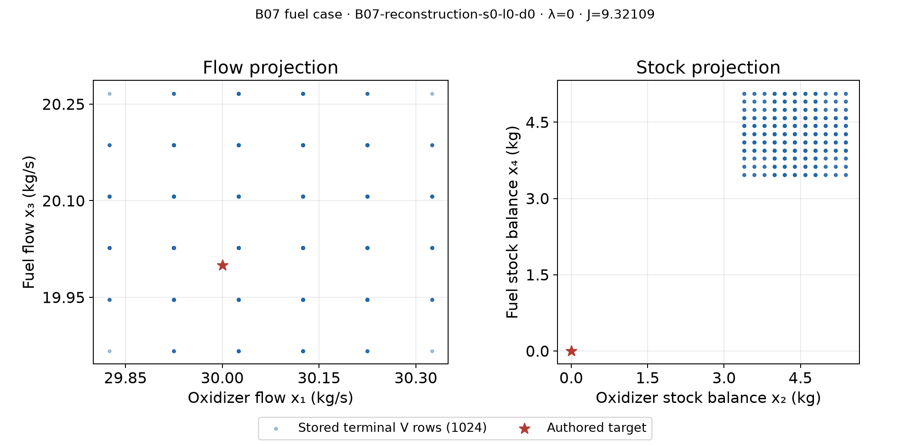
B07 · B07-reconstruction-s0-l0-d1
Two coordinate projections from the recorded four-state terminal rows: x1/x3 flow and x2/x4 stock. Markers are the saved terminal V rows, not a filled enclosure or nonlinear replay. Equal data scaling is used within each same-unit pair.
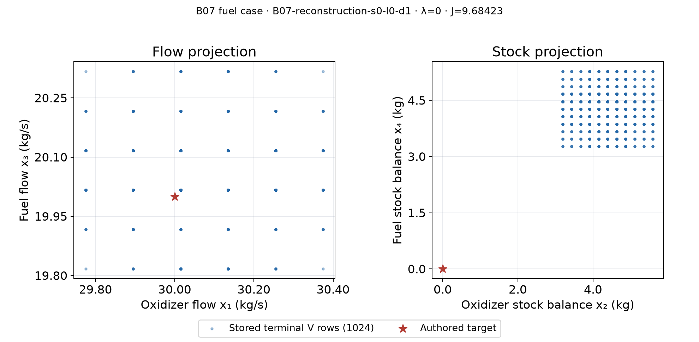
B07 · B07-reconstruction-s0-l1-d0
Two coordinate projections from the recorded four-state terminal rows: x1/x3 flow and x2/x4 stock. Markers are the saved terminal V rows, not a filled enclosure or nonlinear replay. Equal data scaling is used within each same-unit pair.
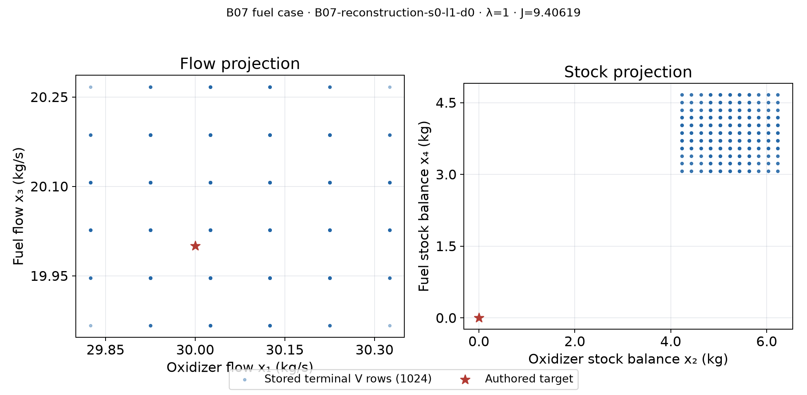
B07 · B07-reconstruction-s0-l1-d1
Two coordinate projections from the recorded four-state terminal rows: x1/x3 flow and x2/x4 stock. Markers are the saved terminal V rows, not a filled enclosure or nonlinear replay. Equal data scaling is used within each same-unit pair.
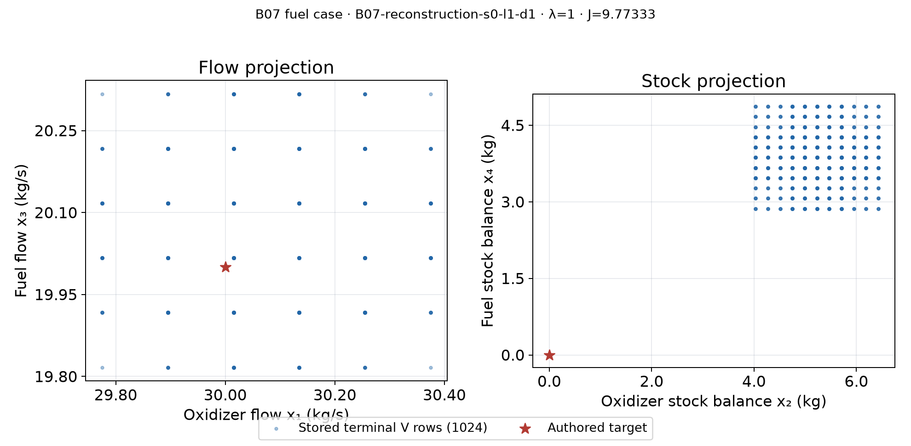
B07 · B07-reconstruction-s1-l0-d0
Two coordinate projections from the recorded four-state terminal rows: x1/x3 flow and x2/x4 stock. Markers are the saved terminal V rows, not a filled enclosure or nonlinear replay. Equal data scaling is used within each same-unit pair.
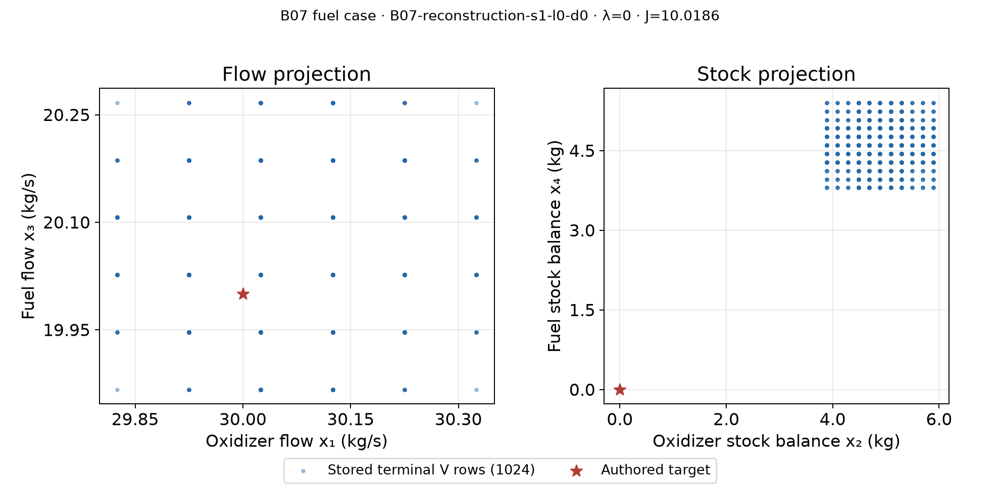
B07 · B07-reconstruction-s1-l0-d1
Two coordinate projections from the recorded four-state terminal rows: x1/x3 flow and x2/x4 stock. Markers are the saved terminal V rows, not a filled enclosure or nonlinear replay. Equal data scaling is used within each same-unit pair.
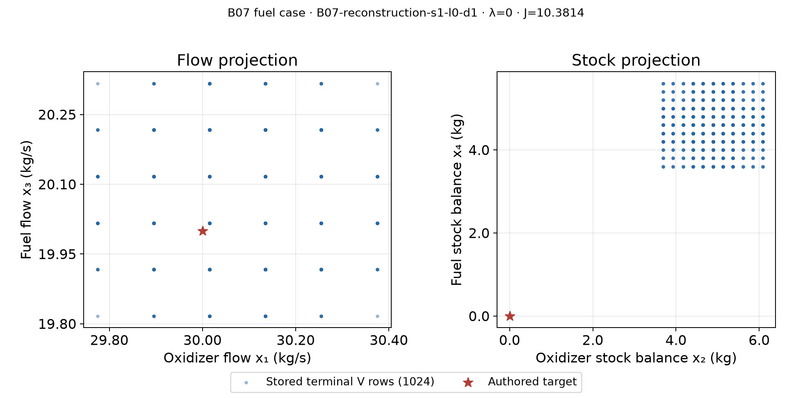
B07 · B07-reconstruction-s1-l1-d0
Two coordinate projections from the recorded four-state terminal rows: x1/x3 flow and x2/x4 stock. Markers are the saved terminal V rows, not a filled enclosure or nonlinear replay. Equal data scaling is used within each same-unit pair.
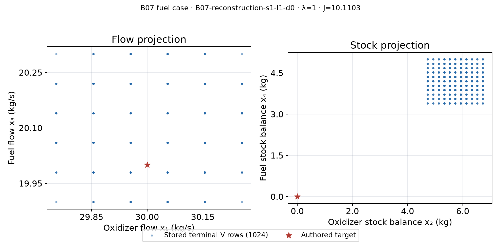
B07 · B07-reconstruction-s1-l1-d1
Two coordinate projections from the recorded four-state terminal rows: x1/x3 flow and x2/x4 stock. Markers are the saved terminal V rows, not a filled enclosure or nonlinear replay. Equal data scaling is used within each same-unit pair.
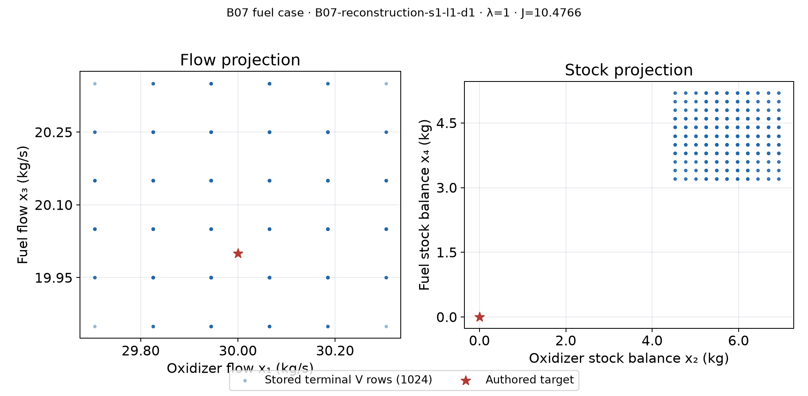
B09 · λ=0.0
Coordinate projections of the saved four-state terminal V rows, with open-loop and receding-horizon nonlinear replay endpoints marked separately. The V rows are plotted as points; no projected hull is recomputed. Equal data scaling is used within each same-unit coordinate pair.
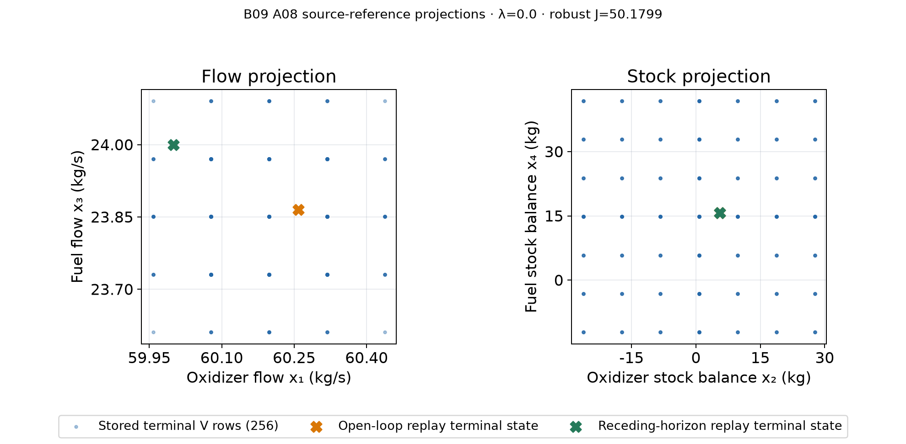
B09 · λ=1.0
Coordinate projections of the saved four-state terminal V rows, with open-loop and receding-horizon nonlinear replay endpoints marked separately. The V rows are plotted as points; no projected hull is recomputed. Equal data scaling is used within each same-unit coordinate pair.
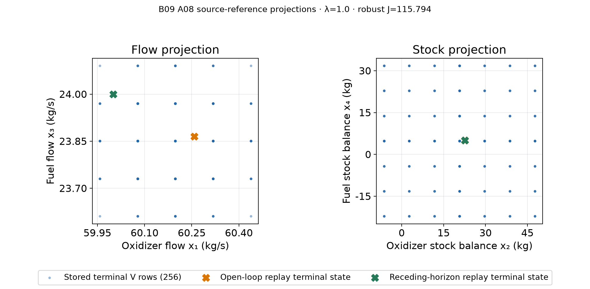
B08 saved fresh-process timings
Every plotted point and median is read from the immutable saved report record; no timing run is performed.
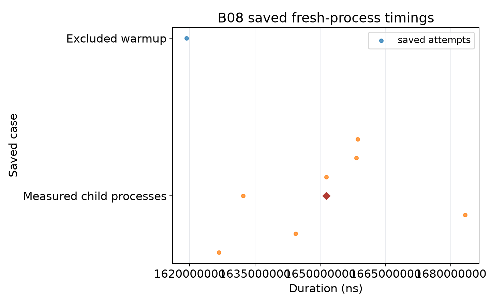
Issue #3 saved finite-catalogue batch timings
Every plotted point and median is read from the immutable saved report record; no timing run is performed.
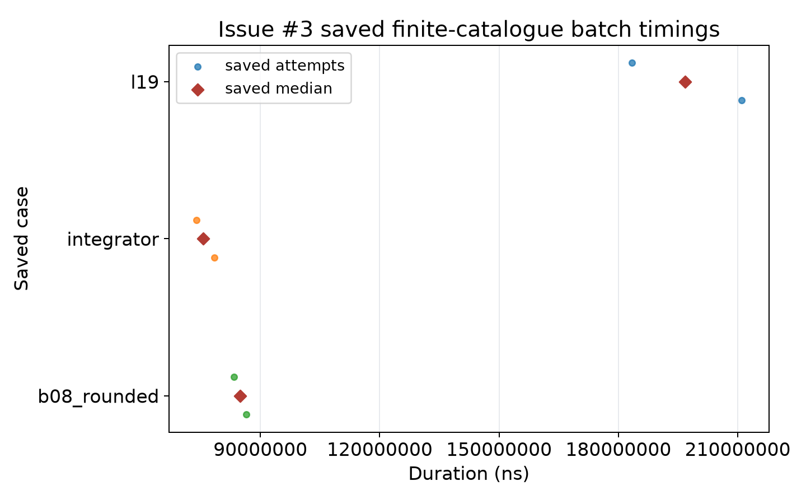
EXP-04 · saved replay paths
The paths are the two literal saved replay fixtures in physical state coordinates; x and y have different units, so axis scaling is independent.
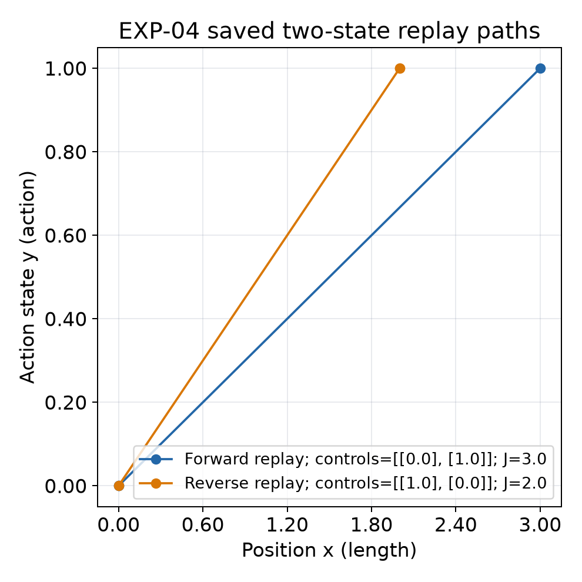
Issue #3 · analytic fixture
Two authored plans reach the displayed terminal states; the target and exact zero residual are recorded in the validated report. This is a fixture diagram, not a solver trace.
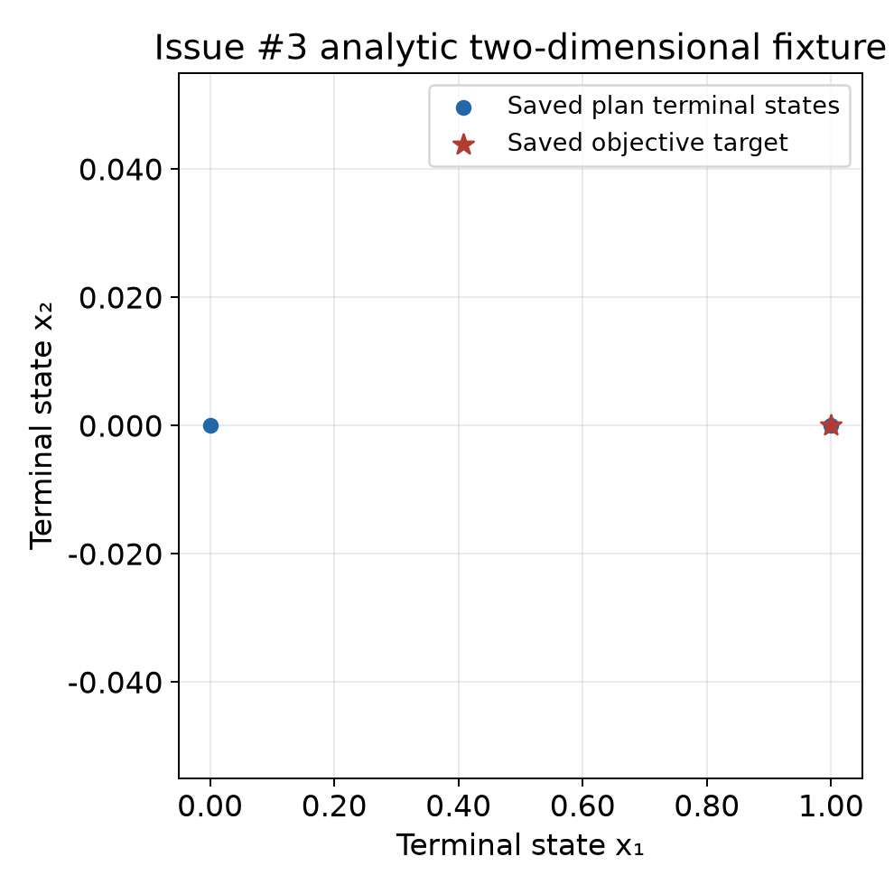
Issue #4 · saved error boxes
Axis-aligned boxes use the saved interval endpoints at stages 1, 20, 40 and 60. The plotted rectangles are illustrative binary64 coordinates; decimal endpoints remain in the immutable record and CSV.
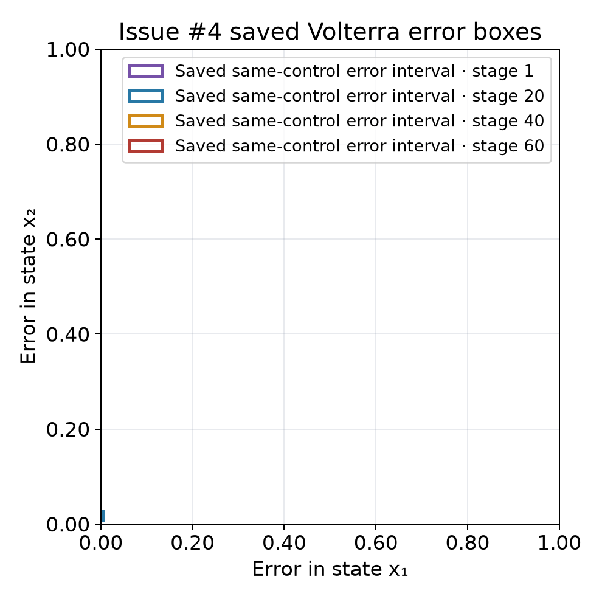
B06 saved-data companion, including x₁/x₃ flow and x₂/x₄ stock projections